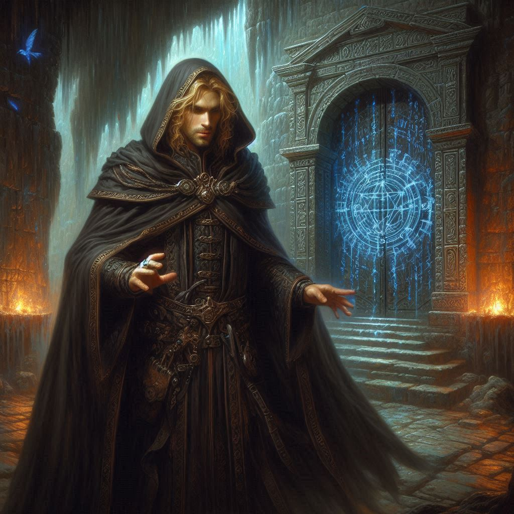
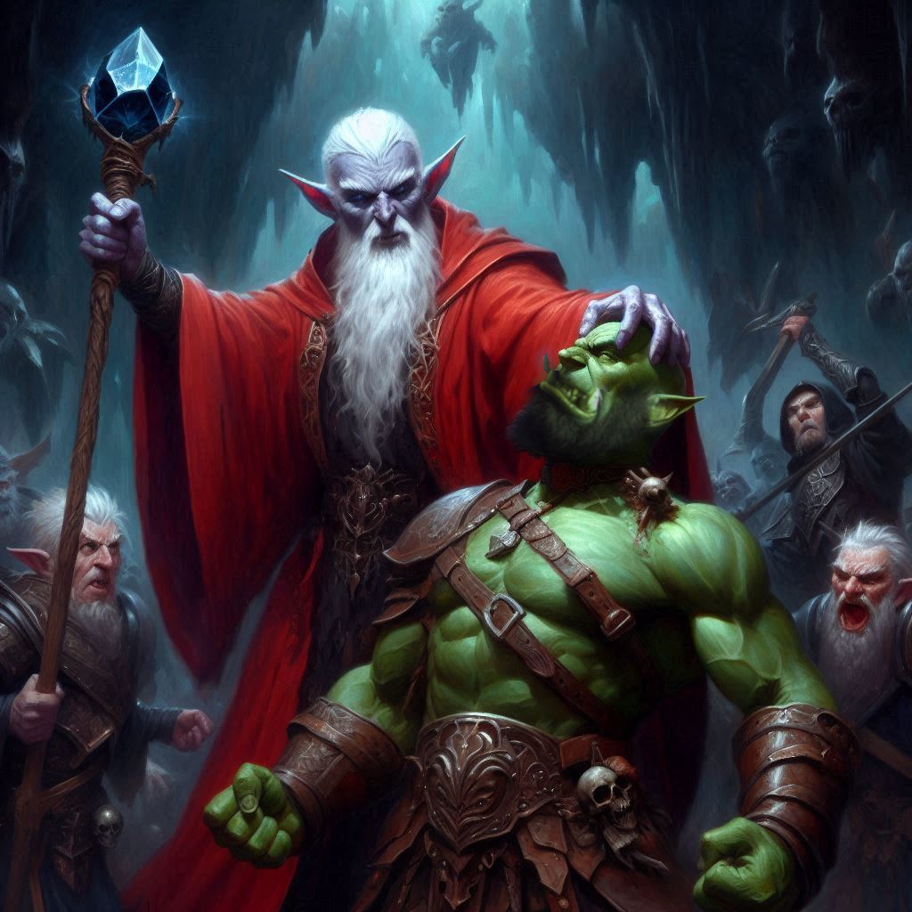
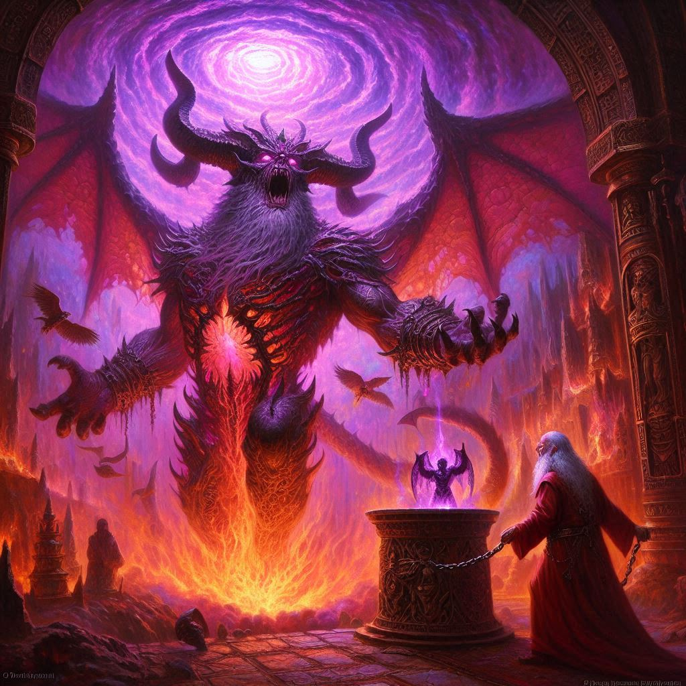

Into the Realm of Shadows
You agree to follow Jorsh to Hemlock Caverns. Elias protests silently with a look of discord, but Jorsh acts swiftly. The dark wizard instructs you to stay hidden as he walks boldly back into the camp. The mercenaries around the fire turn to face him.
“We need to go, wizard. Master Varis will not wait for your petty excuses any longer,” the captain of the squad growls.
“Yes, it’s time to go,” Jorsh says with an easy command. The men stand and begin gathering their things.
Your heart stops. Elias curses. “I knew he would betray us!”
You draw your bow and notch an arrow as Jorsh begins making intricate motions with his hands and speaking words you do not understand the full meanings of. Suddenly a blast of violet energy emanates outward from him like a giant, sparking crystal ball. It hits the mercenaries like a wall of purple fire as it expands outward with incredible force.
“Get down!” Baider grunts, throwing you and Elias to the ground just in time as the sphere of radiant dark energy passes over the three of you. A gust of wind blows past with an ephemeral aftershock. Dazed, you roll to your feet, bow still in hand. Jorsh is walking toward you. The mercenaries are lying in crumpled heaps around the campsite– dead or unconscious– you’re not sure.
“Let’s go,” Jorsh says. “They won’t be following us.”
The four of you enter Hemlock Caverns. The aire inside the cave is heavy with the weight of impending doom. You glance around at your companions: Baider, your gruff adoptive father, still catching his breath after the battle with the scorpions; Elias, his eyes steady but filled with unspoken emotion, and Jorsh, the man who broke your heart but now holds the key to stopping Varis. The tension between all of you is palpable, but there is no time to dwell on old wounds.
"We have to move," you say, your voice firm. The faint glow of torchlight flickers off the jagged cavern walls, casting eerie shadows that seem to whisper of darker things to come. "Varis is ahead of us, and if he sacrifices Onyx—"
"—then Yaldaboath will come into our world," Jorsh finishes grimly. His magic has been key to navigating the treacherous paths of the caverns, but his face is etched with weariness. You can see it in his eyes: he’s been running from this fate for too long.
Baider grunts. "Onyx would want us to focus on stopping that dark elf, not running to save him first. We’ve already wasted too much time."
The words sting, but you know he’s right. Onyx’s wisdom always pointed to the greater good, even when it cost him. Yet the thought of losing him—the last connection you have to your past, to everything familiar—twists painfully inside you.
Elias steps closer, his hand lightly brushing your arm. "Kira, we’ll make it in time," he says softly, his voice filled with a calm certainty. You want to believe him, but the portal ahead glows ominously, and the sense of urgency is suffocating.
Jorsh steps forward, his gaze locked on yours. “You can’t hesitate, Kira. I have a plan, but I’ll need your help—your trust—to see it through.” There’s a flicker of vulnerability in his tone, a trace of the boy you once knew, but also a shadow of the power he now wields. His magic could be the only thing standing between you and certain death, but it comes with a price.
"Then we go," you say, determination flooding your veins. "Together."
The portal looms before you, an ethereal gateway to the Realm of Shadows. As you step forward, the world distorts around you—time and space warping into something otherworldly. A cold wind howls as you’re pulled through, and when you land on the other side, the scene is nothing short of a nightmare.
Varis stands at the center of a vast, crumbling temple, the air thick with the stench of decay and dark magic. The altar before him pulses with sickly light, and on it, Onyx lies bound, barely conscious, the life ebbing from him as Varis prepares the sacrificial spell. His voice chants the ancient incantation to summon Yaldaboath, the demon lord.
Jorsh was telling you the truth. Onyx is already here, and from the looks of it, he's not doing well.
A shadow flickers in the portal to the Nine Hells, and the demonic form of Yaldaboath begins to materialize. Its massive claws scratch at the edges of the veil between worlds, and the ground trembles beneath your feet.
"No!" you shout, drawing your bow and firing an arrow toward Varis. The dark elf turns just in time, raising a hand as your arrow freezes midair, deflecting with a flash of dark magic. Varis grins, eyes gleaming with malevolence.
"You're too late, ranger," he sneers, his voice dripping with contempt. "This world will fall, and Yaldaboath will claim it as his own. You’re nothing more than an insect in the grand scheme."
Baider charges forward, hammer raised. "We'll see about that!" he roars, but Varis conjures a blast of dark energy, hurling Baider back before he can reach him. With another dark spell, Varis pulls an imaginary something from the air over his head and pushes it to the ground. Dark energy envelopes Baider and forces him to his knees. He growls in protest, but he is no match for the evil forces at the command of the dark elf mage.
Elias leaps to your side, weapons drawn, but it’s Jorsh who truly steps into the fray. Dark magic crackles at his fingertips, and for a moment, you see a glimpse of the power he’s gained since the day he disappeared from your life. He raises his arms and sends a wave of fiery magic crashing toward Varis, forcing the dark elf to retreat. But you can see the strain on Jorsh’s face. The magic is powerful—too powerful. It’s consuming him, slowly breaking him from the inside.
You rush to his side. "Jorsh, stop! You’ll kill yourself."
His gaze locks on yours, intense and unwavering. "I have to do this, Kira. There’s no other way."
Suddenly, the air splits with a deafening roar as Yaldaboath’s full form emerges from the portal, its grotesque body towering above you, a mass of claws, wings, and shadow. The demon god’s eyes burn with hunger as it stares at Onyx, ready to devour his soul and complete the dark ritual.
Time slows as you’re faced with an impossible choice. The love you once had for Jorsh still burns somewhere deep inside, but your heart aches for the sacrifice Onyx is about to make. You have to decide now.